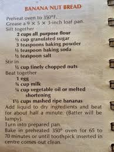

Remembers
What you decided, what you tried, what everyone's allergic to. Tell Baxter once, and whoever asks next gets the answer. Nothing has to be explained twice.
Baxter Family AI
Do we have all the back-to-school supplies? Did we get a present for the birthday party yet? Do we have everything we need for Taco Tuesday? Did anyone pick up the dish soap? Nobody has to remember. Baxter's got this.
Built by a parent in Berkeley, California.
Got questions? Send them to erik@bax.bot.
got a link for sesame street? something with counting
Elmo's Number Party, 11 minutes.
youtu.be/elmo-numbers
perfect thank you. also add milk to my husband's shopping list
On the list. That's three weeks running, want me to just add it every week?
oh yes please
Done. It'll be on there every Monday.

can you save this one? step by step, ingredient by ingredient
Saved. Ten ingredients, seven steps.
home.bax.bot/r/banana-nut-bread
Want me to read it out here?
no thanks. can you put the ingredients on our shopping list?
Done. All ten on the list.
at the store. got bananas, milk, spaghetti
Bananas , milk , spaghetti
do we need any laundry detergent?
Nope, Erik picked some up this afternoon.
while we're here, can you pull up the rest of the grocery list?
Six more things on it.
home.bax.bot/l/groceries
No install required. Text it or email it, and Baxter works out what you need.
What you decided, what you tried, what everyone's allergic to. Tell Baxter once, and whoever asks next gets the answer. Nothing has to be explained twice.
Groceries, the hardware store, the thing you keep meaning to deal with. Add to it from wherever you are, and whoever reaches the shop first sees what the other one already picked up.
Who's where, when, and what collides with what. Ask what Thursday looks like and get an answer, not a calendar to squint at.
Tell it what's in the fridge and it comes back with something you can actually make tonight. Anything you're missing goes straight on the list.
The school newsletter, the permission slip at the bottom of the bag, the party invite stuck to the fridge. Send a photo and Baxter pulls out what matters: dates onto the week, things to buy onto the list.
We're opening up a household at a time. Leave your name and email, and we'll send you the signup form when there's room. Baxter is free while we're in beta. There will be a price eventually, and we'll tell you what it is before you ever pay it.
This just puts you on the list; it doesn't start any messages. When there's room we'll send you the signup form, and that's where you give us your number. See our Privacy Policy and Terms.
Baxter Family AI is the version we host for you. The project underneath is public, so you can read exactly what it does with your household's day before you hand any of it over, or run your own copy instead.